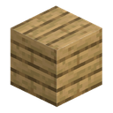
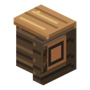
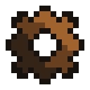
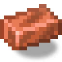

回し車の駆動部
alaindustrial:mob_wheel_controller
概要
回し車は、ハムスターの回し車のような縦置きの木製の車輪で、大きさだけがMobの背丈に合わせて あります。中に生き物を入れてゲートを閉めると、走るMobが車輪を回し、横の駆動部がネットワークに EUを送ります。燃料も天候も開けた空も要らない最初の発電機です: 必要なのは生きた走者と少しの餌だけ。
どの生き物でも走ってくれるわけではありません: どの生き物が走者になり、それぞれ何ができるのかは、 プレイヤー自身が見つけ出します — 経験と駆動部の画面から、のちには種の正確な数値を明かす分析器で。
回し車は安価な木製で、ゲームのごく序盤に作れます。代わりに走者の世話が必要です: 走者は疲れ、 休むか食べるまで車輪は止まります。
ミニ例: 走者は自分の種の最大出力で走り始め、走りの終わりには出力がおよそ半分に落ちて 止まります。給餌スロットに合う餌を1回分入れれば次の走りがすぐ始まります。餌がなければ走者は 自力で休みます — 時間はかかりますが、タダです。
エネルギー
回し車はエネルギーを生産するだけです。出力は駆動部を通ります。駆動部は構造物の中で唯一端子を持つ ブロックで、端子は駆動部の外側の2面 — 側面と背面 — に外装と面一で付いており、ケーブルがぴったり 接続できます。
| 項目 | 値 |
|---|---|
| 内部バッファ | なし |
| 出力 | LV、そのままネットワークへ |
| 実発電量 | 0–12 EU/FE/t、走者・その体力・周囲の条件による |
バッファはありません。駆動部が保持するのは最大1tick分の出力だけで、すぐにネットワークへ渡します。 ネットワークが受け取らなかった分は失われ、それでも走者は体力を使います: 消費先のない回し車は Mobを無駄に走らせるだけです。
最も強い走者が最も有利な条件で走っても銅ケーブルの通過量を超えないので、銅で何も失われません。
発電
回し車がエネルギーを出すのは、Mobが目に見えて走っている間だけです。立ち止まっているMob、 小休止中のMob、気を取られたMob、疲れ切ったMob、空の車輪はいずれも0です。住人は1体だけ: 通路にいる2体目のMobは出力を増やしません。
種の出力 × 条件ボーナス × ペース × (0.5 + 0.5 × 体力の割合)、最後に1回だけ切り捨て体力が満タンなら最大出力、走りの終わりには出力がおよそ半分まで下がります。
走者の気質
プロファイルは種ごとに1つ: 同じ種の個体はすべて同じで、個体差はありません。種はいくつかの性質で
- 出力 — 体力満タンの走者が出すEU/t;
- 持久力 — 満タンの体力で何tick走れるか;
- 回復の速さ — 疲れ切った走者が自力でどれだけ早く回復するか;
- ペース — 一定に走るもの、むらのあるもの(出力が平均の周りで上下する)、ちょくちょく立ち止まって ひと息つくもの、車輪を目に見えて速く回すものがいます;
- 特性 — 一部の種には、役に立つか危険な独自の性質があります。
たいてい力の強い走者はすぐにばて、粘り強い走者は力が弱いものです。どの種がどう違うかを回し車は 教えてくれません: 駆動部の画面は目に見えることしか表示しません。
条件ボーナス
一部の走者には向いた条件があります — 時間帯、天気、回し車を置いた場所の気候など。自分に向いた 条件のもとでは、その走者は出力にボーナスを得ます。それ以外のときはボーナスはありません。ペースと 持久力は条件で変わりません。
疲労
体力は走る1tickごとに減ります — ネットワークがエネルギーを受け取ったかどうかに関係なく。 新しいMobは満タンの体力で来るので、最初の走りに餌は要りません。体力が尽きるとMobは止まり、車輪も 止まります。Mobが死んだりダメージを受けたりはしません。小休止中と、走者が気を取られている間は 体力は減りません — 回復もしません。
体力はその個体のものです: 走者を出してから同じ個体をまた捕まえても、同じだけ疲れたまま 戻ってきます。新しいMobは満タンから始まります。
休息
疲れ切ったMobは車輪から出ずに自力で休みます。満タンまでの回復はおよそゲーム内1日。休むのが速い 種はその何分の一かで済み、遅い種は1日以上かかります。走りが再開するのは体力が満タンになって からです。
干草の俵
構造物から2ブロック以内の干草の俵は休息を4倍速くします。干草の俵は消費されません。走っている 間の体力には影響せず、休息にだけ効きます。
構造
回し車は4種類のブロックでできた3×3×3の建造物です。プレイヤーが置くのは14ブロック。立方体の 残り13マスは空いていなければなりません: 空気、草、シダ、花、雪の層などの小さな植物は邪魔に なりません — 組み立て時に壊れ、ドロップが落ちます。マスに水や溶岩があると組み立てられません。 回し車はどの向きに置いても構いません: 駆動部と同じくプレイヤーの方を向きますが、組み立てた車輪は いずれにせよ走る方向に対して横向きになります。
以下の座標は標準座標です: X/Y/Z は0から2、車輪の軸は Z に沿い、ゲートは +Z を向き、駆動部は 後方右側にあります。構造物は東西南北どの向きにも作れますが、鏡像の組み方は受け付けません。
| ブロック | 内容 | 位置 | 数 |
|---|---|---|---|
| 回し車の駆動部 | LV端子・給餌スロット・すべてのロジックを持つ木製の筐体 | (2,0,0) | 1 |
| 回し車のフレーム | フレームの支柱 | 高さ3の角柱4本、駆動部のマスを除く | 11 |
| 回し車 | ローター本体、立方体の中央に置く | (1,1,1) | 1 |
| 回し車のゲート | 唯一の出入口 | (1,0,2) | 1 |
| 回し車のセル | 組み立てた構造物の見えない詰め物。プレイヤーには渡されない | 残りすべてのマス | — |
組み立てと解体
14ブロックがすべて揃うと構造物は自動で組み上がります: どの部品を置いたときも、隣のブロックが 変わったときも、駆動部がチェックを行います。組み立てた構造物は空きマスを見えない回し車のセルで 埋め、全体がまとめて描画されます — フレーム、回るローター、ゲート。
どれか1つでも部品が欠けると構造物はばらけます: セルは消え、部品は未組立の見た目に戻り、住人は 解放されます。このときセルからは何も落ちません。
未組立の駆動部を素手で右クリックすると、ホットバーの上に足りないものが表示されます: どの部品を 置くか、どのブロックをどけるか、どこの液体を抜くか。
当たり判定
組み立てた構造物の支柱とセルは、Mobの通路を除いて完全なブロックです:
| マス | 当たり判定 |
|---|---|
(1,0,1) — 車輪の床 | 描画された車輪の走行面までの床 |
(1,1,1) — ローター | なし |
(1,1,2) — ゲートの上 | なし |
(1,2,1)、(1,2,2) — 床の上とゲートの上 | なし: 高さ約2ブロックの生き物が持ち上がった床に収まる |
(1,0,2) — ゲート | 閉じていると1.5ブロック(バニラのフェンスゲートと同じ)、開いているとなし |
住人
走れるのは誰か
車輪で走れるのは一部の生き物だけで、それも大人だけです。第1の条件は体格: ゲートを通り、通路で まっすぐ立てなければならないので、幅の広いものや背の高いものは入りません。第2の条件は気性: 大きさの 合う生き物のうち誰が走ってくれるかは、回し車は教えてくれません。走れない生き物はゲートを閉めても 捕まらず、普通のMobのままです。
駆動部の画面は、捕まえた走者を種の名前で表示します。
捕獲
ゲートが開いている間、Mobは自由です。バニラのどんな方法で中に入れても構いません: 餌でおびき寄せる、 リードで連れてくる、自分についてこさせる。
通路とは、車輪の床の列(床とローターのマス)と、閉じたゲート板の内側までのゲートのマスです。 当たり判定が通路に触れている適したMobは、ゲートを閉めたときと、ゲートが閉まっていて車輪が空の 間ずっと(5tickごとに確認)捕まります: Mobを押し込むか入れてから後ろでゲートを閉めても、先に ゲートを閉めてから追い込んでも構いません。中央に最も近い1体が選ばれ、すぐに床の真ん中に置かれます。 閉じたゲート板の外側にいるMobは捕まりません。住人は1体だけ。通路にいる他のMobは普通のMobのままです。
リード。適したMobをリードで連れたプレイヤーが、組み立てた回し車のどこかを右クリックすると — Mobが中に入り、ゲートが閉まり、リードはプレイヤーに戻ります(クリエイティブモードでは戻りません)。 車輪がふさがっていると、ホットバーの上にヒントが出ます。
保持
ゲートが閉まっている間、回し車はMobを自分の床に保持します: 足は走行面にぴたりと乗り、速度も落下も 経路もありません。走っている間、Mobの体・頭・視線は車輪の進行方向を厳密に向きます。もう勝手に デスポーンすることはありません(名札を付けたMobと同じ)。Mob自身の行動は止められません: 回し車は位置を 保持するだけで、ゲートを開ければ単に保持をやめます。
ゲートを開けることが回し車を止める唯一の方法です。別のブレーキ、レバー、スイッチはありません。
危険な走者
敵対的な生き物は回し車の中でも敵対的なままです。近く — 6ブロック以内 — に走者が標的とみなす プレイヤーがいると、走者は気を取られます: 走りと出力は止まり、体力は減らず、走者は自分から プレイヤーの方を向いて攻撃します。近接攻撃が届くのは格子にぴったり寄った相手だけですが、弓兵や 魔法使いは回し車の中から遠距離攻撃してきます。標的がいなくなると、走者はまた走り出します。その間、 駆動部の画面には状態「気を取られている」が表示されます。
走者が自分で使える呪文を回し車は抑えません — 走者が呼び出した生き物はいつも通り危険です。
止まったときに他より危険な走者もいます: そういう走者は走っている間はおとなしいのですが、体力が 尽きたり、気を取られたり、プレイヤーがそばにいるときに立ち止まったりすると — 爆発して車輪を 壊すことがあります。落ち着きのない走者には、車輪に近づかずホッパーで餌をやるのが安全です。
死亡とチャンクのアンロード
- Mobが死んだ — 回し車はすぐに住人を失って止まります。構造物は無事です。
- チャンクがアンロードされた — 回し車も一緒に止まります。ロード後、回し車は自分のMobを探し、 100tick以内に見つからなければ見失ったものとみなします。この場合も構造物は無事です。
給餌スロット
駆動部にスロットが1つあります。餌は手で入れるか、ホッパーで送り込みます。
- 餌は走者に合うものでなければなりません: 種ごとに食べるものが違い、同じ食べ物がある走者には 餌でも別の走者には餌になりません。どの餌がどの種に合うかは、プレイヤーが自分で突き止めることの 一部です。
- 餌が消費されるのは走者が完全に疲れ切ったときだけ — ちょうど1回分で、体力はすぐ最大に戻ります。 前もって食べることはなく、効果も重なりません。
- 今の住人が食べない餌は消費されず、スロットで待ちます。空の車輪は、少なくとも1種の走者が 食べる餌なら何でも受け付けます。
- 1回分の量は食べ物ごとに違います — 珍しいもの1個から、ありふれたもの数個まで — が、どの1回分も 効果は同じ: 体力満タンです。
給餌スロットの干草の俵は餌です。休息に数えられるのは構造物のそばに置いた干草の俵です。
木材の種類
回し車はゲーム内のどの木材でも作れ、その色に染まります。既定はオークです。
どの木材の板材でも、組み立てた構造物のどこかを右クリックすると木製部分すべてが塗り替わります: フレーム、輪、走行用の板、ゲート、駆動部の筐体。板材を1枚消費します(クリエイティブモードでは 消費しません)。銅、鉄、軸、ロープ、端子は色が変わりません。
Minecraft 26.3のすべての木材ファミリーに対応しています — ポプラを含めて13種類。木材の種類は駆動部に 保存され、ワールドを読み込み直しても残ります。
インベントリ
| スロット | 受け付けるもの | 数 |
|---|---|---|
| 給餌スロット | 少なくとも1種の走者が食べる餌 | 1スタック |
他のスロットはありません: 燃料も、アップグレードも、チップもなし。
インターフェース
駆動部、またはゲート以外の組み立てた構造物のどの部分を右クリックしても開きます: ゲートは右クリック で開閉します。画面は目に見えることを表示するだけで、種の解説ではありません:
- 給餌スロット;
- 今の走者の種の名前;
- 今の住人の体力バー;
- 走る速さと現在の出力(EU/FE/t);
- 状態の行 — 走行中、小休止、気を取られている、疲れ切った、干草の俵のそばで休憩中、中にMobが いない、Mobを見失った、未組立。
設定はありません: 駆動部はわざと原始的にしてあり、モードもアップグレードもありません。種の正確な 数値 — 出力、持久力、回復、ペース、餌、特性 — は将来の分析器が明かします。
ブロック属性
部品はすべて木製で、斧で壊します。
| 項目 | 値 |
|---|---|
| 未組立の部品の形 | それぞれのモデルどおり: 駆動部は完全なブロックより1ピクセル低い立方体、フレームは4×4ピクセルの細い柱、回し車は14×14×14ピクセルの立方体、ゲートは通路をふさぐ板で、閉じると高さ1.5ブロック(バニラのフェンスゲートと同じ) |
| 組み立てた構造物の形 | 上の「当たり判定」を参照 |
| 透過 | 全部品が — 組み立てた構造物は駆動部がまとめて描画 |
| 硬度 | 2.0 |
| ピストン | どの部品も動かせない |
| 道具 | 斧(ツルハシでも可) |
| ドロップ | 部品はそれ自体をドロップ。回し車のセルは何も落とさない |
外観
開放型の水車小屋の骨組み: 両側の輪と木製の走行面を持つ十角形の縦置きの車輪、背面に横木の付いた 見える軸、フレームの角柱4本、前面のゲートの両脇の低い柵、そして後ろの角にある簡素な駆動部と、 筐体と面一の銅の端子。車輪はMobが走っている間回り、Mobと一緒に止まります。速い走者は目に見えて速く 回します。モデルとテクスチャはこのMODのためのオリジナルです。
サウンド
回し車には独自のサウンドはありません。ゲートの開閉にはバニラのフェンスゲートの音が使われます。
レシピ
| アイテム | グリッド | 材料 |
|---|---|---|
| 回し車の駆動部 | P G P / P C P / P U P | P — 板材、G — 木の歯車、C — 銅ケーブル、U — 銅インゴット |
| 回し車のフレーム ×6 | S P S / S P S / S P S | S — 棒、P — 板材 |
| 回し車 | P S P / S G S / P S P | P — 板材、S — 棒、G — 木の歯車 |
| 回し車のゲート | 不定形 | 任意の木材のバニラのフェンスゲート + 棒2本 |
回し車1台に必要なのは、駆動部1つ、フレームのクラフト2回(支柱12本、必要なのは11本)、回し車1つ、 ゲート1つです。
関連項目
クラフト
定型クラフト


▶
回し車の駆動部